Acquisition Functions for Bayesian Optimisation
Bayesian optimisation is a powerful optimisation technique for black-box functions and processes with expensive evaluations. It is popular for hyperparameter tuning and model selection in machine learning, but has many real-world applications as well. One of the key components of Bayesian optimisation is the acquisition function, which guides the search process by balancing exploration and exploitation of the search space. In this post, we will dive into the role of acquisition functions in Bayesian optimisation and discuss some popular examples.
Along with the discussion are implementations of each acquisition function in R, using only base R and the Tidyverse.
library(ggplot2)
library(magrittr)
set.seed(4444)Acquisition Functions in Bayesian Optimisation
Bayesian optimisation is an iterative process. It combines a probabilistic surrogate model, often a Gaussian Process (GP), with an acquisition function to select the next point to evaluate in an expensive objective function or process, f. The surrogate model captures our current understanding and uncertainty of the objective function, while the acquisition function helps balance the trade-off between exploring new regions of input space and exploiting regions with high predicted performance.
Mathematically, the acquisition function, a(\mathbf{x}), assigns a value to each point in the search space \mathbf{x} \in \mathcal{X}. The next point to evaluate, \mathbf{x}_{t+1}, is chosen by maximising or minimising the acquisition function, depending on the optimisation task and acquisition function at hand, i.e.
\mathbf{x}_{t+1} = \arg\min_{\mathbf{x} \in \mathcal{X}} a(\mathbf{x})
or
\mathbf{x}_{t+1} = \arg\max_{\mathbf{x} \in \mathcal{X}} a(\mathbf{x})
The acquisition function takes into account both the mean \mu(\mathbf{x}) and the variance \sigma^2(\mathbf{x}) of the surrogate model’s prediction, to balance exploration and exploitation. Roughly speaking, areas with extreme values of \mu(\mathbf{x}) correspond to areas we might exploit to get good performing samples, while areas with high values of \sigma^2(\mathbf{x}) correspond to with high uncertainty that we might consider for exploration.
Notation
The notation used in this post is as follows
a(\mathbf{x}) is an acquisition function of a point \mathbf{x} in the search space \mathcal{X}. While the search space often contains multiple feature dimensions \mathcal{X} \in \mathbb{R}^n, here the example will be in one dimension.
f(\mathbf{x}) is the value of true objective function, f, at \mathbf{x}. It is this function that we aim to optimise. However, the function is not directly available and it is expensive to evaluate so we use a surrogate model to approximate it.
In most applications, the observations of the objective function are noisy, y = f(\mathbf{x}) + \epsilon, where \epsilon is Gaussian noise. So we will use \mathbf{y} to indicate observations.
f(\mathbf{x}^+), f_{\min}, and f_{\max} all represent the best observed value of the objective function so far. If the observations are noisy, the corresponding notation is y^+, y_{\min}, and y_{\max}. For most examples of acquisition functions, this post focuses on minimisation problems, where the best observed value is y_{\min}.
\mathcal{D} is a set of training observations (\mathbf{X}_{train}, \mathbf{y}_{train}).
\mu(\mathbf{x}) represents the mean prediction of the surrogate model at point \mathbf{x}.
\sigma(\mathbf{x}) represents the standard deviation (uncertainty) of the surrogate model’s prediction at point \mathbf{x}. For a GP, this is an entry in the diagonal of the posterior covariance matrix.
An Example Problem
For the demonstration of acquisition functions, we need a toy problem. We will use a simple objective function without noise and a single dimension.
objective_function <- function(x) {
sin(12 * x) * x + 0.5 * x^2
}
X_pred <- matrix(seq(0, 1, length.out = 100), 100, 1)
y_pred <- objective_function(X_pred)This function has two minima and two maxima in the search space \mathcal{X} = [0,1], so it will not be too easy to maximise or minimise.
Show the code
ggplot(data = tibble::tibble(x = X_pred, y = y_pred)) +
geom_line(aes(x = x, y = y)) +
theme_minimal() +
labs(x = "x", y = "f(x)", title = "Objective Function")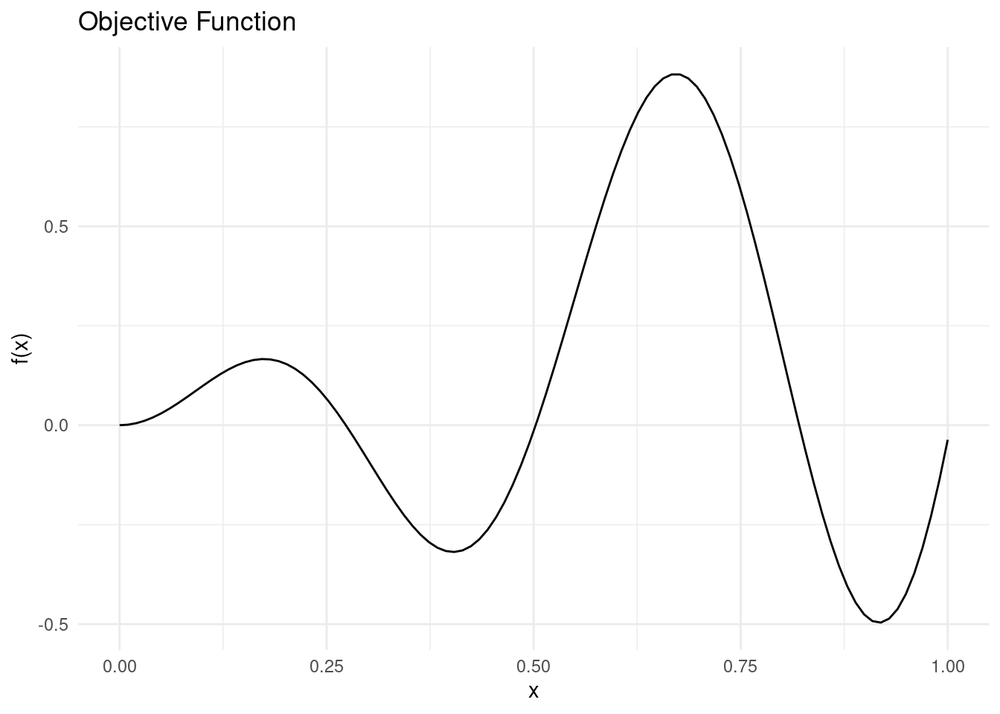
We will approximate the the objective function with a Gaussian process surrogate model that utilises the RBF kernel. See the Bayesian optimisation post for details.
Show the code
#' RBF Kernel
#'
#' @param X1 matrix of dimensions (n, d). Vectors are coerced to (1, d).
#' @param X2 matrix of dimensions (m, d). Vectors are coerced to (1, d).
#' @param l length scale
#' @param sigma_f scale parameter
#'
#' @return matrix of dimensions (n, m)
rbf_kernel <- function(X1, X2, l = 1.0, sigma_f = 1.0) {
if (is.null(dim(X1))) dim(X1) <- c(1, length(X1))
if (is.null(dim(X2))) dim(X2) <- c(1, length(X2))
sqdist <- (- 2*(X1 %*% t(X2))) %>%
add(rowSums(X1**2, dims = 1)) %>%
sweep(2, rowSums(X2**2, dims = 1), `+`)
sigma_f**2 * exp(-0.5 / l**2 * sqdist)
}
#' Random Samples from a Multivariate Gaussian
#'
#' This implementation is similar to MASS::mvrnorm, but uses chlosky
#' decomposition instead. This should be more stable but is less efficient than
#' the MASS implementation, which recycles the eigen decomposition for the
#' sampling part.
#'
#' @param n number of samples to sample
#' @param mu the mean of each input dimension
#' @param sigma the covariance matrix
#' @param epsilon numerical tolerance added to the diagonal of the covariance
#' matrix. This is necessary for the Cholesky decomposition, in some cases.
#'
#' @return numerical vector of n samples
rmvnorm <- function(n = 1, mu, sigma, epsilon = 1e-6) {
p <- length(mu)
if(!all(dim(sigma) == c(p, p))) stop("incompatible dimensions of arguments")
ev <- eigen(sigma, symmetric = TRUE)$values
if(!all(ev >= -epsilon*abs(ev[1L]))) {
stop("The covariance matrix (sigma) is not positive definite")
}
cholesky <- chol(sigma + diag(p)*epsilon)
sample <- rnorm(p*n, 0, 1)
dim(sample) <- c(n, p)
sweep(sample %*% cholesky, 2, mu, FUN = `+`)
}
#' Get Parameters of the Posterior Gaussian Process
#'
#' @param kernel kernel function used for the Gaussian process
#' @param X_pred matrix (m, d) of prediction points
#' @param X_train matrix (n, d) of training points
#' @param y_train column vector (n, d) of training observations
#' @param noise scalar of observation noise
#' @param ... named parameters for the kernel function
#'
#' @return list of mean (mu) and covariance (sigma) for the Gaussian
posterior <- function(kernel, X_pred, X_train, y_train, noise = 1e-8, ...) {
if (is.null(dim(X_pred))) dim(X_pred) <- c(length(X_pred), 1)
if (is.null(dim(X_train))) dim(X_train) <- c(length(X_train), 1)
if (is.null(dim(y_train))) dim(y_train) <- c(length(y_train), 1)
K <- kernel(X_train, X_train, ...) + noise**2 * diag(dim(X_train)[[1]])
K_s <- kernel(X_train, X_pred, ...)
K_ss <- kernel(X_pred, X_pred, ...) + 1e-8 * diag(dim(X_pred)[[1]])
K_inv <- solve(K)
mu <- (t(K_s) %*% K_inv) %*% y_train
sigma <- K_ss - (t(K_s) %*% K_inv) %*% K_s
list(mu = mu, sigma = sigma)
}
#' Negative log-Likelihood of a Kernel
#'
#' @param kernel kernel function
#' @param X_train matrix (n, d) of training points
#' @param y_train column vector (n, d) of training observations
#' @param noise scalar of observation noise
#'
#' @return function with kernel parameters as input and negative log likelihood
#' as output
nll <- function(kernel, X_train, y_train, noise) {
function(params) {
n <- dim(X_train)[[1]]
K <- rlang::exec(kernel, X1 = X_train, X2 = X_train, !!!params)
L <- chol(K + noise**2 * diag(n))
a <- backsolve(r = L, x = forwardsolve(l = t(L), x = y_train))
0.5*t(y_train)%*%a + sum(log(diag(L))) + 0.5*n*log(2*pi)
}
}
#' Gaussian Process Regression
#'
#' @param kernel kernel function
#' @param X_train matrix (n, d) of training points
#' @param y_train column vector (n, d) of training observations
#' @param noise scalar of observation noise
#' @param ... parameters of the kernel function with initial guesses. Due to the
#' optimiser used, all parameters must be given and the order unfortunately
#' matters
#'
#' @return function that takes a matrix of prediction points as input and
#' returns the posterior predictive distribution for the output
gpr <- function(kernel, X_train, y_train, noise = 1e-8, ...) {
kernel_nll <- nll(kernel, X_train, y_train, noise)
param <- list(...)
opt <- optim(par = rep(1, length(param)), fn = kernel_nll)
opt_param <- opt$par
function(X_pred) {
post <- rlang::exec(
posterior,
kernel = kernel,
X_pred = X_pred,
X_train = X_train,
y_train = y_train,
noise = noise,
!!!opt_param
)
list(
mu = post$mu,
sigma = diag(post$sigma),
Sigma = post$sigma,
parameters = set_names(opt_param, names(param))
)
}
}The model will receive four training points. We perform Gaussian process regression and condition the Gaussian process on our training data before drawing from the posterior predictive distribution on a grid of \mathbf{x} \in \mathcal{X}. The \mu(\mathbf{x}) and \sigma(\mathbf{x}) of the posterior predictive distribution are needed to calculate some acquisition functions.
X_train <- matrix(c(0.1, 0.2, 0.7, 0.75), 4, 1)
y_train <- objective_function(X_train)
gp <- gpr(rbf_kernel, X_train, y_train, noise = 1e-8, l = 1, sigma_f = 1)
y_min <- min(y_train)
y_max <- max(y_train)
post_pred <- gp(X_pred)
mu <- post_pred$mu
sigma <- post_pred$sigmaHere is what the Gaussian process looks like so far.
Show the code
gp_plot <- tibble::tibble(
mu = mu,
uncertainty = 1.96*sqrt(sigma),
upper = mu + uncertainty,
lower = mu - uncertainty,
x = X_pred,
f = y_pred
) %>%
ggplot(aes(x = x)) +
geom_line(aes(y = mu, colour = "Mean")) +
geom_ribbon(
aes(ymin = lower, ymax = upper, fill = "89% interval"),
alpha = 0.2
) +
geom_point(
data = tibble::tibble(x = X_train, y = y_train),
aes(x = x, y = y, shape = "Training point"),
colour = "#fb8500",
size = 4
) +
geom_line(mapping = aes(y = f, colour = "True function")) +
scale_shape_manual(values = c("Training point" = "+")) +
scale_fill_manual(values = c("89% interval" = "#219ebc")) +
labs(shape = "") +
theme_minimal() +
labs(
y = "y",
x = "",
colour = "",
fill = ""
) +
theme(panel.grid = element_blank(), axis.text.x = element_blank())
gp_plot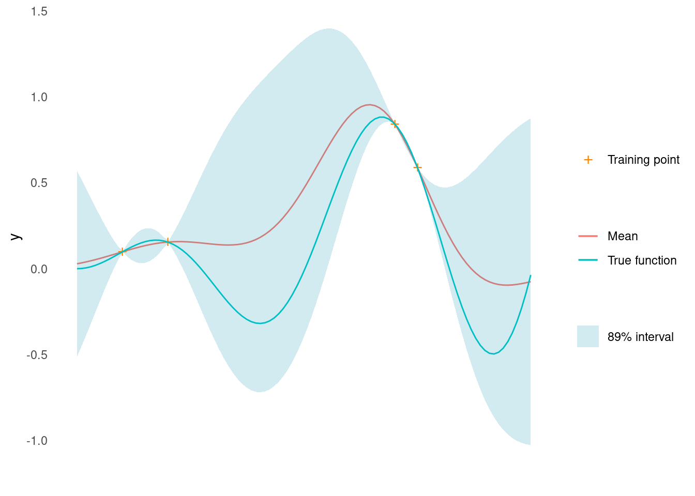
Before getting started, we also define a plot to visualise the acquisition function along with the GP.
Show the code
acquisition_plot <- function(X_pred,
acquisition_function,
gp_plot,
xt1,
label = "EI",
title = "") {
p1 <- tibble::tibble(
x = X_pred,
a = acquisition_function
) %>%
ggplot() +
geom_line(aes(x = x, y = a, colour = label)) +
geom_vline(xintercept = xt1, linetype = 2) +
theme_minimal() +
labs(x = "", y = label, colour = "") +
theme(panel.grid = element_blank())
p2 <- gp_plot +
geom_vline(xintercept = xt1, linetype = 2) +
labs(title = title)
aligned_plots <- cowplot::align_plots(p2, p1 , align = "v")
cowplot::plot_grid(aligned_plots[[1]], aligned_plots[[2]], ncol = 1)
}Now we are ready to apply different acquisition functions to help recommend the next point to sample.
Expected Improvement
The idea behind Expected Improvement (EI) is to search for the point in the search space that has the highest probability of improving the current best solution. EI is defined as the expected value of the improvement over the current best solution, where the improvement is defined as the difference between the function value at the candidate point and the current best value. In other words, EI measures how much better the objective function is expected to be at the candidate point compared to the current best value, weighted by the probability of achieving that improvement.
Formally, the expected improvement acquisition function for a minimisation problem is defined as:
a_{EI}(\mathbf{x}) = \mathbb{E}\left[\max(0, f_{\min} - f(\mathbf{x}))\right]
where \mathbf{x} is the candidate point and f_{\min} is the current best function value observed so far.
When using a GP surrogate model conditioned on noisy observations in place of f, EI can be calculated using the following formula [1]
a_{EI}(\mathbf{x}) = (y_{min} - \mu(\mathbf{x}) - \xi) \Phi(Z) + \sigma(\mathbf{x}) \phi(Z)
with
Z = \frac{y_{min} - \mu(\mathbf{x}) - \xi}{\sigma(\mathbf{x})}
where \mu(\mathbf{x}) and \sigma(\mathbf{x}) are the mean and standard deviation of the Gaussian process at \mathbf{x}. \Phi and \phi are the standard normal cumulative distribution function and probability density function, respectively, and \xi is a trade-off parameter that balances exploration and exploitation. Higher values of \xi lead to more exploration and smaller values to exploitation. a_{EI}(\mathbf{x}) = 0 when \sigma(\mathbf{x}) = 0.
The formulas can be implemented directly.
#' Expected Improvement Acquisition Function
#'
#' @mu vector of length m. Mean of a Gaussian process at m points.
#' @sigma vector of length m. The diagonal of the covariance matrix of a
#' Gaussian process evaluated at m points.
#' @param y_best scalar. Best mean prediction so far on observed points
#' @param xi scalar, exploration/exploitation trade off
#' @task one of "max" or "min", indicating the optimisation problem
#'
#' @return EI, vector of length m
expected_improvement <- function(mu, sigma, y_best, xi = 0.01, task = "min") {
if (task == "min") imp <- y_best - mu - xi
if (task == "max") imp <- mu - y_best - xi
if (is.null(imp)) stop('task must be "min" or "max"')
Z <- imp / sigma
ei <- imp * pnorm(Z) + sigma * dnorm(Z)
ei[sigma == 0.0] <- 0.0
ei
}Let’s see it in action. We calculate EI along a grid and draw it below the GP.
ei <- expected_improvement(mu, sigma, y_min, xi = 0.05)
xt1 <- X_pred[which.max(ei)]
acquisition_plot(
X_pred,
ei,
gp_plot,
xt1,
"EI",
"Expected Improvement (Minimisation)"
)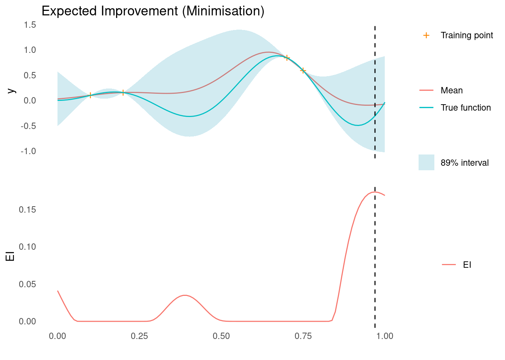
The next sampling point, \mathbf{x}_{t+1}, is the one that maximises the acquisition function, here EI. As marked by the dashed line, this point is close to the right edge, where there is a high mean prediction but also high uncertainty, so it satisfies our need for both exploration and exploitation.
EI works for maximisation problems as well, by replacing y_{min} - \mu(\mathbf{x}) with \mu(\mathbf{x}) - y_{max} in the expressions above.
ei <- expected_improvement(mu, sigma, y_max, xi = 0.05, task = "max")
xt1 <- X_pred[which.max(ei)]
acquisition_plot(
X_pred,
ei,
gp_plot,
xt1,
"EI",
"Expected Improvement (Maximisation)"
)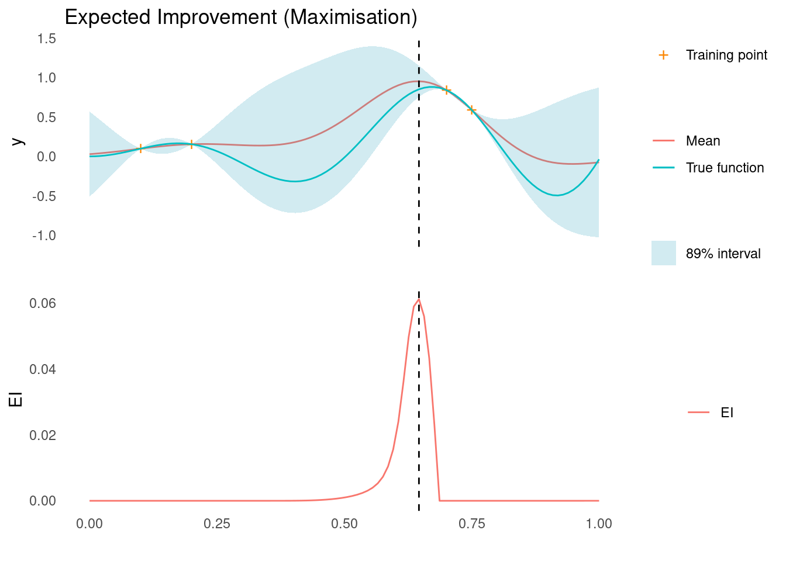
The next sampling point, \mathbf{x}_{t+1}, is still the one that maximises EI. As marked by the dashed line, this point is close to two sampled points, where we are quite certain that there is improvement to be found.
Probability of Improvement
Probability of improvement (PI) aims to select the point that has the highest probability of improving the current best solution. Like expected improvement, the PI function balances exploration and exploitation by taking into account both the mean and the variance of the surrogate model. A point with a high mean and low variance is likely to be a good candidate for exploitation, while a point with a high variance but lower mean may be more suitable for exploration.
The PI acquisition function is defined as
a_{PI}(\mathbf{x}) = P(f(\mathbf{x}) \lt f_{\min} + \xi)
When using a GP surrogate model conditioned on noisy observations in place of f, EI can be calculated using the formula
a_{\text{PI}}(\mathbf{x}) = \Phi\left(\frac{y_{min} - \mu(\mathbf{x}) - \xi}{\sigma(\mathbf{x})}\right)
where \mu(\mathbf{x}) and \sigma(\mathbf{x}) are the mean and standard deviation of the Gaussian process at \mathbf{x}, \Phi is the standard normal cumulative distribution function, and \xi is a trade-off parameter that balances exploration and exploitation [2]. Higher values of \xi lead to more exploration and smaller values to exploitation.
The formula can be implemented directly
#' Probability of Improvement Acquisition Function
#'
#' @mu vector of length m. Mean of a Gaussian process at m points.
#' @sigma vector of length m. The diagonal of the covariance matrix of a
#' Gaussian process evaluated at m points.
#' @param y_best scalar. Best mean prediction so far on observed points
#' @param xi scalar, exploration/exploitation trade off
#' @task one of "max" or "min", indicating the optimisation problem
#'
#' @return PI, vector of length m
probability_of_improvement <- function(mu,
sigma,
y_best,
xi = 0.01,
task = "min") {
if (task == "min") imp <- y_best - mu - xi
if (task == "max") imp <- mu - y_best - xi
pnorm(imp / sigma)
}Let’s see it in action. We calculate PI along a grid and draw it below the GP.
pi <- probability_of_improvement(mu, sigma, y_min, xi = 0.1)
xt1 <- X_pred[which.max(pi)]
acquisition_plot(
X_pred,
pi,
gp_plot,
xt1,
"PI",
"Probability of Improvement (Minimisation)"
)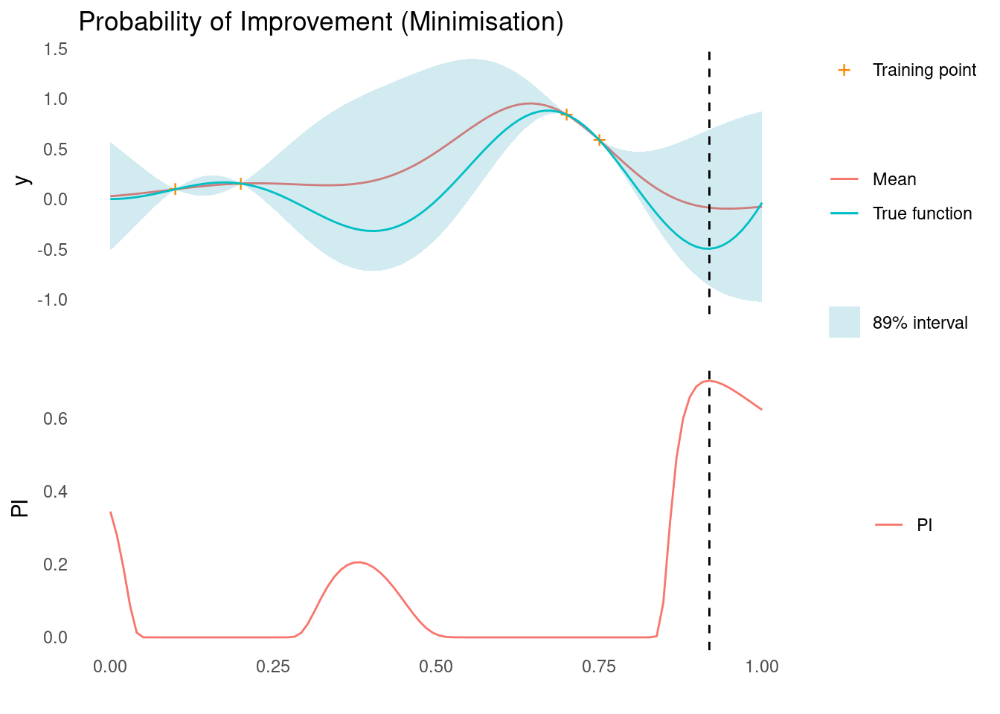
The next sampling point, \mathbf{x}_{t+1}, is the one that maximises the acquisition function, here PI. As marked by the dashed line, this is close to the right edge, where there is a low mean prediction but also high uncertainty, so it satisfies our need for both exploration and exploitation. There are a few other good contenders in the spaces between training points though.
PI works for maximisation problems as well, by replacing y_{min} - \mu(\mathbf{x}) with \mu(\mathbf{x}) - y_{max} in the expression above.
pi <- probability_of_improvement(mu, sigma, y_max, xi = 1, task = "max")
xt1 <- X_pred[which.max(pi)]
acquisition_plot(
X_pred,
pi,
gp_plot,
xt1,
"PI",
"Probability of Improvement (Maximisation)"
)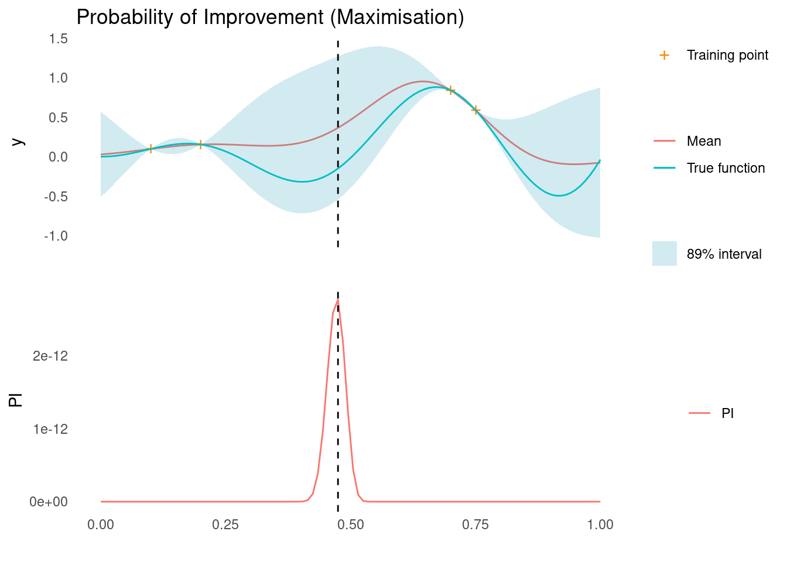
The next sampling point, \mathbf{x}_{t+1}, is still the one that maximises PI. As marked by the dashed line, this is in an area of high uncertainty.
Lower & Upper Confidence Bound
The Lower Confidence Bound (LCB) and Upper Confidence Bound (UCB) acquisition functions are fairly simple acquisition functions. They balance exploration and exploitation by combining the mean and the weighted standard deviation predictions of the surrogate model. LCB is used for minimisation problems and UCP is applied for maximisation problems.
The LCB function is defined as
a_{LCB}(\mathbf{x}) = \mu(\mathbf{x}) - \kappa \sigma(\mathbf{x})
and UCB as
a_{UCB}(\mathbf{x}) = \mu(\mathbf{x}) + \kappa \sigma(\mathbf{x})
where \mu(\mathbf{x}) and \sigma(\mathbf{x}) are the mean and standard deviation of the Gaussian process at \mathbf{x} and \kappa is a tunable parameter that controls the balance between exploration and exploitation. Higher values of \kappa promote more exploration, while lower values emphasise exploitation.
With the mean term explicitly controlling exploitation and the weighed standard deviation term explicitly controlling exploration, UCB and LCB arguably represent the simplest acquisition function one could implement. This does not mean that UCB or LCB are worse than EI or PI, however. When the surrogate model is a GP, this simpler acquisition function might have similar performance to EI, for appropriate choices of \kappa [3] [2].
The acquisition functions are straightforward to implement, given \mu and \sigma:
#' Upper and Lower Confidence Bound Acquisition Function
#'
#' @mu vector of length m. Mean of a Gaussian process at m points.
#' @sigma vector of length m. The diagonal of the covariance matrix of a
#' Gaussian process evaluated at m points.
#' @param kappa scalar, exploration/exploitation trade off
#' @task one of "max" or "min", indicating the optimisation problem
#'
#' @return CB, vector of length m
confidence_bound <- function(mu, sigma, kappa, task = "min") {
if (task == "min") return(mu - kappa * sigma)
if (task == "max") return(mu + kappa * sigma)
}Let’s see it in action. We calculate LCB along a grid and draw it below the GP.
lcb <- confidence_bound(mu, sigma, kappa = 2, "min")
xt1 <- X_pred[which.min(lcb)]
acquisition_plot(X_pred, lcb, gp_plot, xt1, "LCB", "Lower Confidence Bound")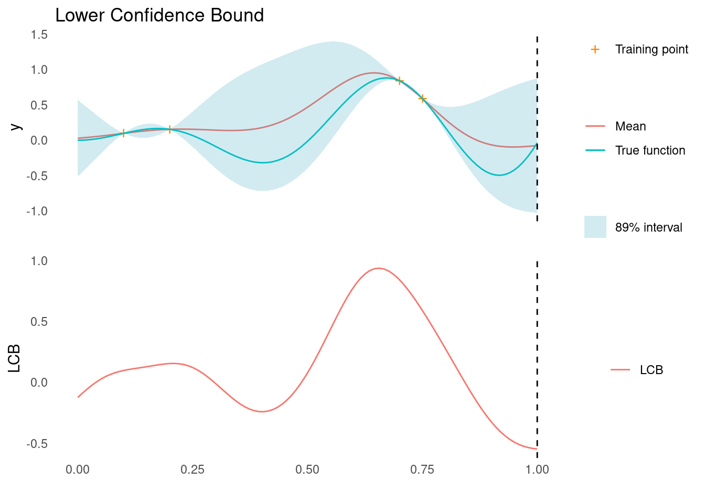
As marked by the dashed line, LCB tells us that the next point to sample, \mathbf{x}_{t+1}, is all the way at the right edge of search space.
We can do the same for UCB
ucb <- confidence_bound(mu, sigma, kappa = 2, "max")
xt1 <- X_pred[which.max(ucb)]
acquisition_plot(X_pred, ucb, gp_plot, xt1, "UCB", "Upper Confidence Bound")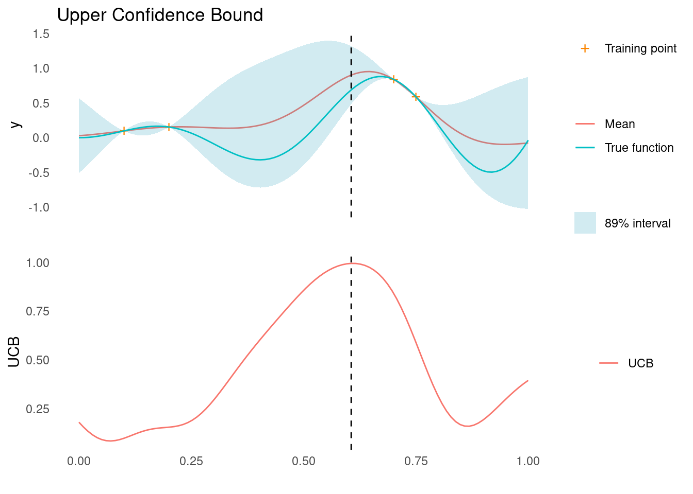
As marked by the dashed line, UCB tells us that the next point to sample, \mathbf{x}_{t+1}, is close to two known points, where we are fairly certain that there is improvement to be found.
Thompson Sampling
A Gaussian process represents a distribution over functions. At this point in Bayesian optimisation, the GP has been conditioned on training data, \mathcal{D}, and it acts as a surrogate for the objective function. This means that we have a distribution of functions which summarise our knowledge and uncertainty about the objective function.
We can take that a step further and consider the posterior distribution, p(\mathbf{x}'|\mathcal{D}), of points, \mathbf{x}', that optimise the the functions drawn from the GP. A point drawn from that distribution would be a good candidate for our next evaluation of the objective function
\mathbf{x}_{t+1} \sim p(\mathbf{x}'|\mathcal{D})
This is the core idea of Thompson Sampling. Thompson sampling addresses the exploration versus exploitation dilemma by directly making use of our posterior beliefs and the fact that the GP is just a distribution of functions [2]. Notice also that no additional parameters are needed for this method.
To do Thompson sampling in practice, we sample a function from the GP
a_{ts}(\mathbf{x}) \sim p(y | \mathcal{D})
This is not an acquisition function in the same way that Expected Improvement or Confidence Bound are, but we can use it in exactly the same way to suggest the next point
\mathbf{x}_{t+1} \in \arg\min\limits_{\mathbf{x} = \mathcal{X}}(a_{ts}(\mathbf{x}))
for a minimisation problem, or
\mathbf{x}_{t+1} \in \arg\max\limits_{\mathbf{x} = \mathcal{X}}(a_{ts}(\mathbf{x}))
for a maximisation problem.
Given the posterior predictive distribution, Thompson sampling is straightforward to implement. Let’s see it in action!
We draw a random sample function and find its minimum and maximum
ts <- as.vector(rmvnorm(1, post_pred$mu, post_pred$Sigma))
xt1 <- X_pred[which.min(ts)]
acquisition_plot(
X_pred,
ts,
gp_plot,
xt1,
"Sample",
"Thompson Sampling (Minimisation)"
)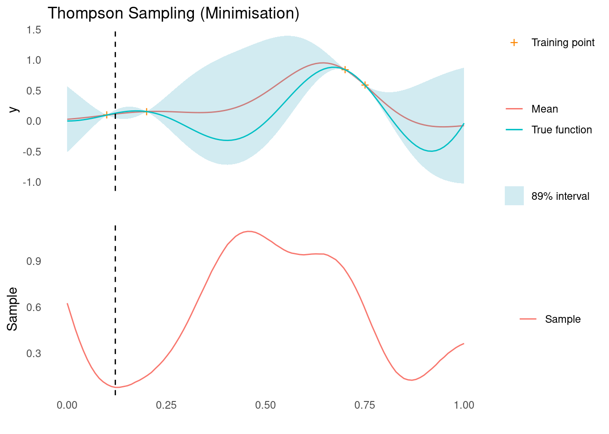
xt1 <- X_pred[which.max(ts)]
acquisition_plot(
X_pred,
ts,
gp_plot,
xt1,
"Sample",
"Thompson Sampling (Maximisation)"
)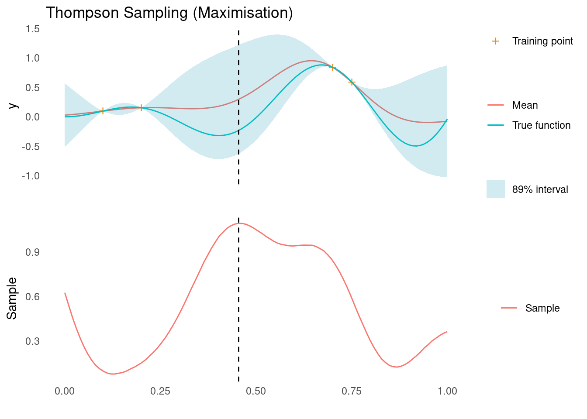
The dashed line indicates the next sampling point, \mathbf{x}_{t+1}, for a minimisation and maximisation task, respectively. For the minimisation problem, we are suggested a point that corresponds to exploitation and for the maximisation problem we are suggested a point that corresponds to exploration. It is this stochastic behaviour that, over a sequence of experiments, will give us a natural balance between exploration and exploitation.
Knowledge Gradient
The Knowledge Gradient (KG) is an acquisition function that makes extensive use of the posterior distribution to suggest a sampling point. KG is simulated rather than calculated and the rationale behind it takes a bit of set up.
Imagine that we are at the end of our sequential experimentation. We have collected a set of observations \mathcal{D} = (\mathbf{X},\mathbf{y}) and we are about to recommend our final set point, \mathbf{x}^*, which hopefully is close the global optimum of the objective function.
In most real world cases, we are risk averse and would opt to select a point that we have already tested, i.e. \mathbf{x}^* \in \mathbf{X}. Imagine, however, that we were not risk averse and just wanted to report the point in search space with the best expected outcome given the data so far, then we might recommend
\mathbf{x}^* = \arg\min\limits_{\mathbf{x} \in \mathcal{X}}\mu(\mathbf{x})
We also define \mu^* = \mu(\mathbf{x}^*).
At this point, imagine that we are suddenly allowed to test just one more point. Given that we have decided to recommend the point that optimises the posterior mean at the end of our experimental sequence, the next point, \mathbf{x}_{t+1}, we choose to evaluate in the the objective function should be the point that maximises the increase in the optimum posterior mean.
Let’s say we pick any point, \mathbf{x}_{t+1} \in \mathcal{X}, to be our next point. That would result in the observation y_{t+1} and eventually a recommended final point, \mathbf{x}^*_{t+1} with mean \mu^*_{t+1}. The decrease in posterior mean, \mu^* - \mu^*_{t+1}, would be an excellent estimator of improvement in choosing \mathbf{x}_{t+1} as the next sampling point.
However, we cannot calculate \mu^* - \mu^*_{t+1} without actually collecting the sample y_{t+1}. Instead we could estimate the expected value, given just the observations so far:
a_{KG}(\mathbf{x}) = \mathbb{E}_{p(y|\mathcal{D})}[\mu^* - \mu^*_{t+1}]
This is the definition of the Knowledge Gradient for a minimisation problem [1].
For a maximisation problem, the definition is
a_{KG}(\mathbf{x}) = \mathbb{E}_{p(y|\mathcal{D})}[\mu^*_{t+1} - \mu^*]
where \mu^* = \max(\mu(\mathbf{x})).
To calculate KG in practice, we need a way to estimate \mu^*_{t+1} as a function of existing observations and we need a way to integrate over p(y|\mathcal{D}).
To address the latter for a proposed point, \mathbf{x}_{sim}, we take the following steps
We draw a sample y_{sim} \sim p(y|\mathbf{x}_{sim},\mathcal{D})-
We then create an augmented dataset \mathcal{D}^+ = (\{\mathbf{X},\mathbf{x}_{sim}\}, \{\mathbf{y},y_{sim}\}).
We condition the surrogate model on the augmented dataset.
Finally, we compute the optimum of the new posterior mean. This is an estimate of \mu^*_{t+1}.
We cannot integrate this estimate over p(y_{sim}|\mathcal{D}), but we can draw M samples, compute \mu^*_{t+1} for each of them and calculate the mean difference:
a_{KG}(\mathbf{x}) \approx \frac{1}{M}\sum_{j=1}^M \mu^* - \mu^*_{t+1,j}
As M approaches infinity, the estimate should converge to the true KG. Since we need a large amount of samples and need to repeat the process for each candidate \mathbf{x}, a good sampler is needed to estimate KG.
For our simple one-dimensional example, we can brute force it without worrying too much about optimising the calculation. For an example with more dimensions or for a smoother estimate of KG, a proper MCMC sampling would be needed.
mu_min <- min(mu)
mu_max <- max(mu)
# for each candidate point
kg <- tibble::tibble(x_sim = X_pred) %>%
dplyr::mutate(
# Calculate the posterior predictive distribution for y at x_sim
post = purrr::map(x_sim, gp),
# Draw M = 100 samples of y_sim from the posterior predictive distribution
y_sim = purrr::map(post, function(p) {
rlang::exec(rmvnorm, n = 100, mu = p$mu, sigma = p$Sigma)
})
) %>%
tidyr::unnest_longer(y_sim) %>%
dplyr::mutate(
# For each pair of (x_sim, y_sim)
# augment dataset with x_sim, y_sim and get the posterior mean
mu_sim = purrr::map2(x_sim, y_sim, function(xs, ys) {
rlang::exec(
posterior,
kernel = rbf_kernel,
X_pred = X_pred,
X_train = rbind(X_train, xs),
y_train = rbind(y_train, ys),
!!!post_pred$parameters
)$mu
}),
# Calculate the estimator
mu_min_sim = purrr::map_dbl(mu_sim, min),
mu_max_sim = purrr::map_dbl(mu_sim, max),
mu_diff_min = mu_min - mu_min_sim,
mu_diff_max = mu_max_sim - mu_max
) %>%
dplyr::group_by(x_sim) %>%
dplyr::summarise(kg_min = mean(mu_diff_min), kg_max = mean(mu_diff_max)) %>%
dplyr::arrange(x_sim)Here is KG for the minimisation case. Notice that the estimate is very rough. More samples would have made the estimate smoother. The dashed line shows where we would sample next, according to KG.
acquisition_plot(
X_pred,
kg$kg_min,
gp_plot,
X_pred[which.max(kg$kg_min)],
"KG",
"Knowledge Gradient (minimisation)"
)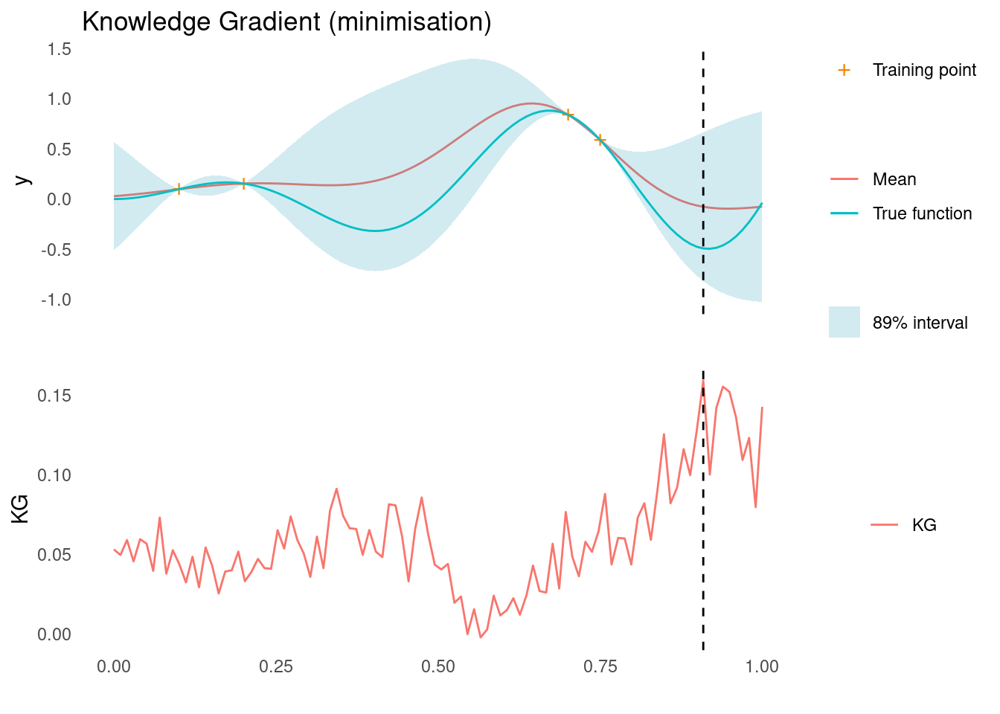
Here is KG for the maximisation case. Notice that the estimate is very rough. The dashed line shows where we would sample next, according to KG.
acquisition_plot(
X_pred,
kg$kg_max,
gp_plot,
X_pred[which.max(kg$kg_max)],
"KG",
"Knowledge Gradient (maximisation)"
)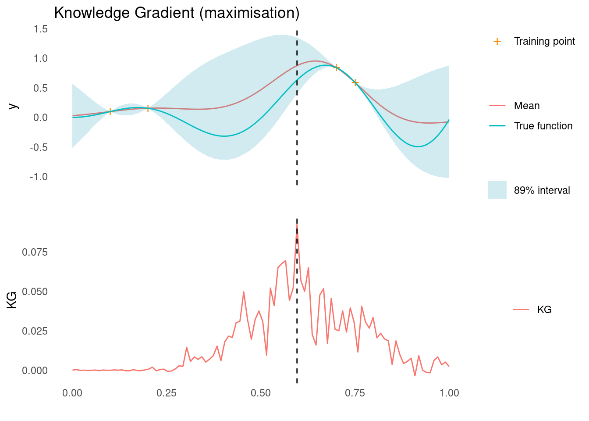
References
License
The content of this project itself is licensed under the Creative Commons Attribution-ShareAlike 4.0 International license, and the underlying code is licensed under the GNU General Public License v3.0 license.
Anders E. Nielsen
Data Professional & Research Scientist
I apply modern data technology to solve real-world problems. My interests include statistics, machine learning, computational biology, and IoT.